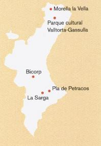

ARTE RUPESTRE VALENCIANO
El inventario del arte rupestre valenciano incluye casi cuatrocientos conjuntos. Estos museos al aire libre abarcan un amplio periodo; desde el Paleolítico Superior, hace ya unos 26.000 años, hasta la Edad del Bronce, hace unos 3.500 años.
En el Paleolítico aparecen las primeras muestras artísticas. Estas creaciones están cargadas de un gran simbolismo. El tema central son los animales y algunos signos. Las figuras humanas raramente son representadas. De esta época destacan los conjuntos de la Cova Fosca (Vall d´Ebo. Alicante), la Cova de les Maravelles (Xaló. Alicante) y la Cova del Parpalló (Gandia. Valencia). Hacia el 8.000 a.e.c el clima experimentó un progresivo aumento de las temperaturas y de la humedad, dejando atrás la época glacial. En este periodo, el Mesolítico los cazadores entran en contacto con nuevos pobladores que practican al agricultura y la ganadería. Nacen distintos estilo de expresión: El Arte Lineal-Geométrico, grabados con motivos geométricos sobre plaquetas. Cueva de la Cocina.( Dos Aguas, Valencia). El Arte Macroesquemático, se localiza entre las sierras de Benicadell, Mariola y Aitana. Esta caracterizado por la realización de grandes figuras en pintura roja; figuras humanas en actitud orante y motivos serpentiformes. Destaca el Pla de Petarcos, Castell de Castells, Alicante. El Arte Levantino, es la expresión que más abunda en nuestra Comunitat, se han catalogado unos cien conjuntos. En las escenas interactúan hombres y animales representados con cierto detalle, permitiéndonos conocer la indumentaria, armamento, adorno personal y actitudes sociales de estos artistas. Las muestras más representativas se localizan en el Maestrazgo de Castellón, en los barrancos de la Valltorta y de Gasulla. Estas representaciones se datan hace unos 6.000 años y son un tesoro que nos permite conocer a esos cazadores. A lo largo del III milenio a.e.c la agricultura se consolida y aparecen los primeros vestigios de actividades metalúrgicas realizadas en cobre. La Edad del Cobre. El Arte Esquemático reciente se caracteriza por la representación de seres humanos y de animales a través de unos rasgos esenciales. Son comunes los motivos antropomorfos, zoomorfos, geométricos e ídolos. A finales de la Edad del Bronce se realizan las últimas pinturas rupestres. En la Edad del Hierro los iberos desarrollan una cultura cuya expresión se plasmó en la decoración de sus cerámicas. Con la Escritura se abrió una nueva etapa.
El Arte Rupestre de la Comunitat Valenciana es Patrimonio Mundial incluido dentro del Arte Rupestre del Arco Mediterráneo.
|
 |
Parque visitables en la C. Valenciana: Morella la Vella. Info: 96 417 30 51 Parque Cultural de Valltorta-
Gassulla. Info: 964 33 60 10 Parque cultural de Bicorp. Info: 96 226 91 10 Pla de Petarcos. Info: 96 551 82 06 La Sarga. Info: 96 553 71 44
|